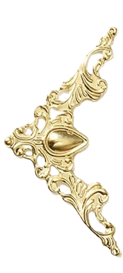

Whispers of the Forgotten Worlds
Where Shadows Keep Their Stories

Prologue: Beyond the Last Light
The Sun Fades to a Ghost...Shadows Awaken.
The Outer Wilds Whisper Your Name.
The Outer Wilds Whisper Your Name.
Gate I: The Whispering Frontier
Exiles drift in the Kuiper dark.
Gate II: The Exiled King
Pluto’s heart still beats beneath the ice..
Gate III: The Shadow Queen
Eris rules in silence and defiance.
Gate IV: The Tumbling World
Haumea spins chaos into survival.
Gate V: The Solitary Radiant
Makemake glows as the ember of the void.
Gate VI: The Hidden Water World
Ceres whispers oceans beneath stone.
Gate VII: The Council of Misfit Legends
Five voices converge across eternity.
Final Gate: A Promise in the Dark
Your vow will carry their memory forever.
The Edge of Light
The Sun🌞 shrinks behind you — a pale coin flickering in the abyss.
The inner worlds fade into MEMORY, swallowed by distance.
But the dark is Not Empty.
It breathes... It watches...
It waits...
You have crossed into the Outer Wilds — a kingdom of shadows...
Where Forgotten Worlds Circle Like "Exiles"...
Before you, the First Gate rises.
Stone against starlight...
Waiting...!!
Pluto
Frozen Sentinel ❄️
Eris
Shadow Queen 🌒
Haumea
Shattered Dancer 💫
Makemake
Ember in the Void 🌟
Ceres
Whispering World 🌕
×
The Gates of Silence
The night stretched endlessly across the horizon, its silence broken only by the Whisper of Faint Distant Stars.
You stepped forward...boots sinking into the frost, as though the ground itself resists your passage. Far ahead, an Arch of stone stood against the sky, carved NOT by human hands but by something Older — something Watching🫨. A voice seems to breathe through the void: You reached out, heart racing, as the shadows stirred.....
You reach forward and..
The adventure is about to BEGIN...
The Shadow That Watches 🔎👁️
You return to Pluto’s horizon. The silence is sharp, cutting like glass.. The mountains glisten like teeth in the starlight.
And then,movement..
A shadow slides across the frost.
Silent. Swift. Wrong.
It is gone.
Your breath stills.
The void feels aware.
Something has noticed you..👁️
The silence is alive.
The dark is begins to speak.
And the forgotten worlds....
Are Listening.
The curtain has lifted. The journey has begun. What lies in the ice, in the whispers, in the flickers of distant shadows — will find YOU..🚀
⋆｡ ﾟ ☁︎｡ ⋆｡⋆𓆩༺✧༻𓆪 ﾟ ☾ ﾟ ｡⋆
Gate 1: The Whispering Frontier
Part I — Entering the Borderlands ✨
The darkness shifts. Not silence anymore—something moves here🌑. The void breathes, cold and subtle, whispering secrets that tickle the edge of your senses.
Faint trails of starlight drift through the black, like cosmic ghosts ✨. Tiny shards of ice and rock float past you, glittering against the void like scattered gems 💎.They are not debris.. They are memories—fragments from the Birth of the Solar System 🕰️💫.
Behind you, the Sun 🌞 is a pale lantern 🔭, smaller than a coin, flickering weakly across endless black. Its warmth is gone..
A rumor from a Distant World...
Out here, Temperatures plunge to -220°C 🥶❄️.
A place where
Breath freezes instantly and Shadows themselves seem Solid.
Where Even Silence Has A Weight....
Then… emptiness begins to shimmer. Tiny sparkles drift like frost-kissed fireflies, flickering in the eternal dark.❄️✨.
You have crossed into the Kuiper Belt 🌌—a colossal ring of icy worlds, stretching thirty to fifty farther from the Sun than Earth, filled with trillions of ancient bodies, frozen remnants left behind at the dawn of creation.❄️
A wilderness frozen in time, alive with secrets.. 🪨
The Kuiper Belt is both Prison ⛓️ and Sanctuary 🌟. Each icy shard carries a memory: frozen water 💧, methane ❄️, traces of ammonia and organics—the building blocks of life. These fragments are time capsules unchanged for 4.5 billion years 🕰️✨.
Touch one, and you are holding 4.5-Billion - Year-Old History 😱⚡️ In Your Hands 🕰️✨...
Whispers of creation. Stone poems of the first light. And in their silence… something listens back.
Part II — Shapes in the Shadows 🌑👁️
Your eyes adjust.. Shapes move among the drifting ice🌕. Not boulders, not comets. But Worlds. Small, yes—but round, scarred, alive💫. One drifts closer—a shadow wrapped in frost, shimmering faintly🌕. It is neither planet nor asteroid. Something in between. Something the universe hesitates to name...
And then it whispers:
✨ Dwarf planet ✨
Here, “dwarf” does not mean lesser. It means Hidden.. Secret.. Legendary 🌑👑.. Among these frozen wanderers, Five hold the Crown of Mystery. Each carries scars of cosmic history, each keeps secrets the giants of the inner Solar System cannot tell. They are not rulers — they are poets of creation 💫🌌.
They do not speak.
They only watch.
And in their watching, you feel the weight of judgment.
Here, in the Silence, You are the intruder....
One of them turns toward you…🌑👁️
The Frozen Heart Emerges ❄️🌕
And then you see it.
A pale glimmer....
A Frozen Heart.....
A world that once dared to be a "PLANET".🌕
Jagged mountains rise like the teeth of forgotten beasts🏔️. Nitrogen frost sparkles across plains stretching endlessly. Valleys hide secrets beneath ice, hinting at a possible underground ocean 🌊❄️.
The first voice of the frontier. The dreamer who refused to be forgotten.
Pluto❄️🌕
The story begins...
It's only the beginning… four more voices wait in the shadows.
GATE 2
Pluto – The Exiled King
Pluto
The Exiled King
Your legs refuse to move... The ice beneath you seems to grip you with intent, Warning you: this world does not forgive lightly. And then, through the shadows, a pale glow emerges.
Pluto 🌕
A name you’ve known for decades. Once the ninth planet, the pride of the outer Solar System. Now - An exile.. Forgotten.. Cast aside…❄️👁️ You should feel comforted😮💨. But Pluto does not welcome recognition lightly. Its icy plains shimmer faintly, jagged mountains rise like the spines of ancient beasts, and every crevice seems to judge your presence. The exiled king remembers every slight, every whisper of betrayal.
You take a careful step👣. The nitrogen frost crunches underfoot.. Tombaugh Regio glows ahead — the Heart...💖Sputnik Planitia stretches wide, pale and smooth, yet alive. Polygonal ice patterns ripple slowly, almost like Pluto itself is breathing beneath the frost.
Could there be an ocean hidden below....
liquid and secret, keeping the planet’s memories alive for
billions of years?????✨
Across the horizon, the dark red of Cthulhu Macula stretches like a Scar⚡️. Ancient, haunting—a reminder that Pluto has survived collisions, betrayals, and the abandonment of the inner planets. The contrast between light and dark is not just visual—it is emotional. Pluto wears its exile openly, a mixture of beauty and bitterness, pride and sorrow🥺💔.
Above you, a whisper-thin atmosphere shimmers. Nitrogen, with traces of methane and CO, forms pink and blue hazes as the tiny Sun 🌞 struggles to warm the surface. The world exhales and inhales with its orbit, expanding and collapsing, centuries of breath stretching across the Kuiper Belt.
And then… movement. Subtle but deliberate. Charon 🌕, massive and grave, mirrors Pluto’s gaze—a sentinel in the void. Styx, Nix, Kerberos, and Hydra🪐 drift in silent orbits, companions of the exiled king, witnesses to its sorrow, guardians of its secrets.
You remember its orbit 🚀. Eccentric, wandering across Neptune’s path, 248 Earth years for a single lap around the Sun. Tilted, extreme, isolated. Each season lasts decades😦, alternating light and darkness. You begin to understand why Pluto holds grudges: it has felt rejection not just from the Sun, but from the worlds it once called "Siblings" 💔.
A shiver runs through your spine as shadows lengthen. Every ridge, every crevice, every polygon of ice seems to watch you, assessing whether you come as a friend—or another betrayer ❄️👁️.
Then, a voice—soft, ancient, alive:
"Why have you come… after all these centuries?"
Pluto seems to ask, a shadow flickering across the plains 🌑.
"Do you know what it feels like… to watch the worlds you loved call you less? To be erased from memory?"You try to respond, but the cold steals your words. Pluto’s icy plains shimmer faintly, alive with emotion✨...
"I have watched my siblings dance in the Sun’s warmth… while I wandered, exiled, through darkness😓.
Tell me… why should I trust you?"
You step closer, heart pounding. The Heart of Pluto pulses under your gaze... The exiled king does not demand friendship—only recognition, only understanding.🙁And then, almost imperceptibly, the tension eases. A shimmer of acknowledgment spreads across the icy plains. Not warmth. Not forgiveness.
Just a silent, measured acceptance...✨
Pluto’s final message drifts into your mind:
"Remember me, little traveler...
Remember that even exiles have stories… even forgotten worlds have hearts...Tell them of me… and do not let me vanish into silence." ✨
A tear slides down your cheek...
You know your journey is far from over, but you cannot linger.
The Sun is distant. Space-time awaits. You look once more at the icy kingdom, the mountains, the Heart, and the moons circling silently🥺.
Hovering above Sputnik Planitia, you feel the pulse of this distant planet—the weight of billions of years, the ache of betrayal, and the quiet pride of survival. Pluto is more than a dwarf planet.
It is alive, mysterious, haunted, and unforgettable 🌕✨...
The frontier is alive.
And your story has only just begun...

GATE 3
Eris – The Shadow Queen 👑
🌌Eris
The Shadow Queen 🌌
The cold follows you like a living thing ❄️👁️. You leave Pluto’s icy plains behind, but the Heart, the mountains, the moons—all of it—linger in your memory, a sorrowful echo of a world betrayed and remembered 🌕.
You drift further into the Kuiper Belt. The darkness deepens, stretching into a void older and colder than your mind can't imagine.. Shadows twist among drifting ice and rock🪨, remnants of worlds that never found a Home.
Every shard glints like a memory, frozen in time 🕰️.
And then…
A glimmer, faint at first, almost swallowed by the void. A queen emerges from the darkness, smaller than Pluto but radiating an icy, indomitable presence.
Eris 🌒💫
Your breath catches...
The distance alone makes her untouchable—67 times farther from Sun than Earth... The faint light of the distant Sun 🌞 barely warms her surface, and yet she glows with a cold, defiant majesty.
She drifts alone, a dwarf planet exiled even beyond Pluto’s reach. Her orbit is wild and eccentric 🚀, taking 557 Earth years to circle the Sun🫠 swinging far beyond Neptune’s domain, a lonely sentinel of the outer darkness.
Eris does not move like Pluto, deliberate and measured. She spins slowly, aloof, almost teasing the universe, daring anyone to approach.
Her surface is a frost of methane ice ❄️💎, pale whites and shimmering blues, with hints of mysterious red dust scattered across some craters ❄️. Every ridge, every depression, carries the story of billions of years🕰️...
And then you sense her companion: ❄️ Dysnomia 🌑, her small moon, orbiting silently, faithful and unblinking. Styx, Nix, Kerberos, and Hydra are Pluto’s family—But....
Eris walks alone save for Dysnomia, a shadow following the queen.
A presence. Not a voice, but awareness.👁
Eris watches you.. Her shadow stretches across the icy plains, swallowing your light, testing your courage..🔥.
"Why do you follow me… to the edge of the Solar System?"
Her silence whispers, ancient and sharp.
"Do you seek knowledge… or do you merely tremble before what you cannot control?"
You realize she is not asking, but Challenging.
This is not a world to be tamed. This is a world to be witnessed, respected, feared ❄️👁️.
You drift closer, careful, mesmerized by her frozen beauty.
The surface glints faintly with ice and frost, and you imagine the mysterious heat below, a secret core perhaps, hiding stories of formation and survival 🌊✨.
Eris’s orbit carries her farther than any of her siblings, yet she remains a mirror of Pluto’s defiance. Alone, distant, yet Alive... The Kuiper Belt is her kingdom—a frontier where time moves differently, where isolation is power🔱, and secrecy is survival✨.
You step nearer, and for a fleeting heartbeat...The Queen of Shadows seems to acknowledge you, a silent nod across billions of kilometers💫.
Not friendship, not warmth—just recognition.
A fleeting trust, hard-won and ephemeral🔆...
Eris Farewell & The Kuiper Belt 🌌
"Remember me",
her presence seems to murmur across the void.
"Not for what I am called… But for what I endure..."
You leave with a shiver😬, carrying Eris’s story in your Heart..
Another exile, another mystery of the Kuiper Belt, reminding you that the outer reaches of the Solar System are Alive, Secretive, and profoundly Emotional 🌌.
The Kuiper Belt stretches on, darker still.
You drift on.....
Knowing Pluto and Eris are just the beginning...
Three ancient wanderers await, each a world of ice, fire, and hidden histories......🤕
Each with a story the inner planets cannot tell....🍂
GATE 4
Haumea The Tumbling World⚡️
Haumea-The Tumbling World⚡️
You thought you could leave.. Pluto’s sorrow still lingers in your heart... Eris’s cold gaze haunts your thoughts 🌒.... You drift through the Kuiper Belt, expecting Emptiness...But another legend awaits....And almost instantly, you realize—you are not free to move on yet. A glint, sharp and impossible, spins into view.
Haumea 💫🌀
Your chest tightens. Its shape is…😱 Wrong...Not round... Not forgiving. A fast-spinning, elongated ellipsoid🏉, racing through space like a celestial blade🪚. One rotation takes just 4 hours 😵💫⏱️, so fast that the poles flatten and the equator bulges outward—a world shaped by chaos itself.
Its orbit swings wildly, from 38 to 51 AU from the Sun , drifting along the outer edges of the Kuiper Belt like a rebel with NO master. Centuries stretch like frozen breaths as it swings through darkness, extreme seasons dancing across icy plains ❄️🥶.
Crystalline ice ❄️💎 glitters across the surface, catching the distant Sun 🌞 in dazzling flashes. Tiny shards drift off, sparks from an invisible forge, twirling across the void. You feel dizzy🫨🫨 just looking at it, as if space itself is bending in response.
Billions of years ago, a violent collision spun this world into its current chaotic form💥. Fragments were flung outward, some forming moons—Hi‘iaka and Namaka🌙🪐 — others left adrift as wandering icy shards❄️. Every ridge, every frozen crack tells the story of survival against the cosmic storm.
You try to move closer, but your body hesitates.
Haumea’s frenetic spin seems to tug at your senses, pulling you into its rhythm 🌌.
You are trapped💥, caught in the pull of this tumbling world, mesmerized by motion and beauty.
Then, a thought drifts across your mind..
"Do you understand…
What it takes to Survive When the Universe Spins You Faster than Your Own Gravity Can Hold?"
The words echo in your chest. Crystalline plains glimmer like frozen mirrors, reflecting the infinite void. Shadows stretch and vanish, light twists in impossible curves, and for a moment, you feel dizzy with awe🫨.
And then, another question drifts silently, carried on the spinning winds:
"Do you see me?"
"Do you honor my struggle… or do you merely watch?"
You shiver, your pulse syncing, for a heartbeat, with Haumea’s furious rotation🧶.
You realize you are part of this story now, a witness to a world that dances on the edge of danger and beauty.
The moons twirl, shards glitter, and the tumbling ellipsoid teaches a lesson older than Earth itself:
Chaos can be Alive, and Survival is an ART📿...
Finally, you step back, reluctantly breaking the hypnotic hold😮💨. Your chest heaves, your mind still reels. Haumea spins on, a world of motion, mystery, and frozen beauty, leaving a mark on your soul you know will never fade 💭. Far ahead, in the shadowed distance, a quieter, more radiant glow beckons.
Makemake waits, solitary, enigmatic, ready to reveal its own secrets🪄.
The journey continues…
GATE 5
Makemake – The Solitary Radiant🧿
Makemake
The Solitary Radiant🧿
The Solitary Radiant🧿
You stagger back, your legs trembling under the lingering pull of Haumea’s furious spin. Nausea twists through you, your stomach churning as if the universe itself has turned you inside out 🤢. You try to escape, to pull yourself away from the hypnotic spin, but your body refuses to obey. Every step feels heavier, every breath thinner.
The echoes of Haumea’s silent questions still ring in your mind..
"Do you see me? Do you honor my struggle… or do you merely watch?"
Your heart pounds....💓 You realize that witnessing Haumea was not enough—you had to feel it, understand it, respect it. Only then could you survive this strange frontier of wandering worlds.
And then… a glimmer in the distance 🌟.
A faint gradient of light, soft yet impossible in its beauty. Something calmer than Haumea, yet alive with its own secrets.
You squint, trying to focus through your spinning vision, nausea, and racing thoughts..
Makemake 🌟
Its light is quieter, more solemn, almost Welcoming💫.
At first...it seems small, faint, almost shy—but the closer you drift, the more its presence grows, like a solitary lighthouse in the endless black. The dwarf planet radiates quiet confidence, standing alone in its orbit 45–53 AU from the Sun 🚀, weaving slightly eccentrically through the Kuiper Belt like a watchful sentinel 🌌❄️.
A thought drifts through your mind, lingering from Haumea’s challenge:
"If Haumea is the chaos that tests your courage, I am the solitude that asks you to reflect."
Makemake is the embodiment of that solitude. Its pale, reddish surface, coated in frozen methane ❄️, glimmers faintly under the distant Sun 🌞. Tiny craters pockmark its icy plains, evidence of ancient cosmic collisions 💥🪨. Unlike Haumea, it does not spin frantically—its rotation is measured, deliberate, a quiet rhythm that invites reflection rather than fear.
You hover above the dwarf planet, feeling an almost spiritual resonance with its lonely existence 🌟💫. For billions of years, it has drifted in isolation, silent yet proud, holding secrets of volatile ices, frozen methane, and ethane trapped in its crust ❄️🧊.
Scientists on Earth call it distant and remote—but here, in your presence, it is alive, dignified, and enigmatic❤️🔥.
A pulse of quiet thought drifts through your mind:
"I am alone… yet I endure. I shine, even when no one watches.."
Your chest swells with emotion, tears welling despite the frozen chill surrounding you ❄️💧. You feel the solitude, the beauty, the quiet defiance of this world. The dwarf planet does not ask for recognition, yet demands presence, understanding, respect🪐🍀.
Makemake’s orbit is slow, deliberate, taking Centuries to circle the Sun, seasons Lasting Decades❄️.
Its surface glows faintly in orange-red hues, a living diary of radiation, ice chemistry, and ancient impacts.
There are no known large moons its solitude does not feel empty; it feels complete, a world content in its own existence 🌟🪐.
You try to speak, to leave a mark, a thought, a whisper—but words feel small. Instead... let your presence, your awe, your reverence reach the dwarf planet.💫🍀
Somewhere inside, a final pulse seems to rise:
"Remember me. I have seen the darkness, I have endured the void. Witness my existence, traveler… and carry my story with you.🪴"
Tears well up despite the frozen expanse ❄️💧.
You feel the solitude, the beauty, the quiet defiance of this world.
You cannot linger forever; the frontier stretches endlessly, and the next dwarf planet waits—this time closer to the warmth of the inner Solar System.
You take one last glance, imprinting the reddish glow, the frozen plains, the solitude, deep into your memory🌈. Makemake’s quiet gaze lingers in your heart, a solemn reminder that the universe holds stories not of kings or rulers, but of survivors, exiles, and silent watchers 🌌💫.
Far ahead, in the shadowed distance, a new light beckons—the hidden water world of Ceres 🌑💧, whispering its secrets from the asteroid belt.
Your journey continues…
But you know, somewhere in the silence of space, Makemake watches, remembered and honored 🌟✨.
GATE 6
Ceres –The Hidden Water World 🔵🫧
Ceres
The Hidden Water World 🔵🌊
The Hidden Water World 🔵🌊
You drift onward, leaving Makemake’s quiet radiance behind 🌟✨. Your chest still heaves from the emotional weight, the awe, the silent connection to a world that endured in solitude. Yet the frontier does not pause for reflection—the Kuiper Belt thins, the light shifts, and your path curves toward the inner edge of the Solar System. Somewhere ahead, a softer glow beckons, warmer, yet still mysterious 🌑💧.
Ceres🔵🫧
The first thing you notice is subtle: a gentle shimmer, pale blue and white, faint but persistent🔵. Unlike the distant, isolated dwarf planets you’ve encountered, Ceres feels alive in a different way—not through defiance, not through chaos, but through quiet possibility✨.
You realize it is closer to the Sun😀☀️, orbiting between Mars and Jupiter, in the heart of the Asteroid belt 🚀. Its presence is almost Hidden, easily overlooked —
But..to the trained eye, it is a world of secrets and hope..👁✨
Your steps Slow.... Something in the shimmer draws you near🌒. And as you approach, the surface reveals itself: a landscape of ancient craters, ridges, and icy plains, glinting faintly under the distant Sun 🌞❄️. But the most extraordinary feature lies beneath the crust: water. Liquid, hidden, preserved for billions of years 💧🌊.Ceres is the only dwarf planet so close, so small, yet holding such a profound secret.
A thought drifts through your mind, echoing like a whisper from the planet itself:
"I carry life where none expected it. I am quiet, yet I endure. Will you notice, traveler? Will you remember?"
You feel compelled to look closer. Bright spots shimmer within the craters, patches of salt and ice reflecting sunlight, glinting like stars fallen to the surface. Some scientists on Earth called them “mysterious” before spacecraft revealed their nature—but here, in your presence, they feel alive..Like Ceres is breathing, pulsing with memory and possibility 🌌💎.
Your body feels lighter here. The nausea, the dizziness, the chaos of Haumea, the solemn solitude of Makemake — all melt into a steady rhythm as you hover above this Water World. There is a gentleness here, an invitation to listen and witness.
And then you feel it: the gravity, subtle yet insistent, reminding you that this small world still holds you, still draws you close.
It is protective, almost maternal, guarding the frozen oceans beneath its crust, secrets of potential life, frozen memories of the Solar System’s earliest days 💖❄️.
You whisper back, almost involuntarily🗣:
"I see you, Ceres..👩🏻🚀 I honor your endurance.. I will carry your story....💞"
For a heartbeat, the shimmer seems to brighten, a quiet acknowledgment.
This is not a chaotic spin, not a solitary radiance—but a profound test of empathy, of attention, of respect. You realize the frontier has changed you: you are no longer a mere observer.
You are a Participant, a Witness, and a Storyteller yourself 💫....
Ceres spins slowly, deliberately, rotating every nine hours ⏱️... Its orbit, nestled between the giants, seems calm, predictable, yet beneath its surface lies the unexpected😶. Water, ice, salts, possibly organic molecules—life’s potential preserved in silence 🌊🧬.
No moons accompany it closely, yet it feels surrounded by guardianship—the asteroid belt itself, a vast crowd keeping watch, silent witnesses to Ceres’ quiet dignity😊.
You took one last look, imprinting the pale blues, the shimmering craters, the hidden oceans deep into your memory.
The journey continues…
Beyond the asteroid belt, beyond the known, toward worlds of ice and shadow you have yet to meet 🌌✨.
But somewhere in the quiet of space..
You feel Ceres watching... Trusting you to carry its secret....
A gentle reminder that,
Not all stories roar...
Some whisper, waiting for those willing to listen...🌑💧
GATE 7
The Council of the Misfit Legends
🌌 The Council of the Misfit Legends 🌌
The Kuiper Belt stretches endlessly behind you 🌌❄️, a silent river of ice and shadow. You sit upon the icy expanse, letting the vacuum cradle you. The cold bites softly, but it is nothing compared to the storm of emotions inside you 🌑💫.
You feel the weight of all you have seen.....
The fury of Haumea🫨❤️🔥,
The solitude of Makemake😬🤎,
The sorrow of Pluto🥺💔,
The icy defiance of Eris🥶🤍,
and The hidden hope of Ceres🥹❤️🩹 🌑💫.
Each dwarf planet lingers in your memory like a heartbeat💓, a pulse of the universe that refuses to be ignored⚠️.
And then… a convergence.
Somehow, across the vastness of the frontier, the distant lights glimmer faintly, all five of them appear before your eyes. Not physically together — they do not need to be—but their presence floods the void. Shadows and glimmers, spins and quiet lights, each world radiating its essence into the same space.
From this distance, you can see them together. You feel them all at once…
🌑🥺 Pluto — The exiled king, sorrowful yet proud 💔❄️
🌒🥵 Eris — The shadow queen, daring and untamed 💀
💫🫨 Haumea — The tumbling world, chaos and resilience spun into ellipsoidal perfection 🌀
🌟😴 Makemake — The solitary radiant, glowing with quiet endurance in pale orange-red ✨
🌑😇 Ceres — The hidden water world, gentle and protective, whispering secrets of life 💧
The frontier pauses. You breathe in the weight of it all...
The Misfit Legends of the Kuiper Belt have shown you that..
The Universe is Alive —
Each world a voice, a heartbeat, a story that deserves witness.
Your journey has reached a horizon, but the echoes of these worlds will follow you forever 🌌✨.
A thought drifts across your mind, almost a voice in the darkness:
"We are the misfit legends🌕.. Forgotten by some, feared by others, yet we endure.. Witness us… and remember..📍"
You feel a wave of emotion: awe, reverence, humility, and something bittersweet🥺. They are not rulers, not conquerors — they are survivors, storytellers, guardians of forgotten histories. You realize that their exile is their wisdom, their solitude their strength, their chaos their beauty..💖
For a moment,
You are Suspended in Time🕛, hovering in the middle of the void, heart racing ❤️🩹💫.
And then, each world seems to reach out in its own way, not with words, But with PRESENCE.....🍃❣️
FINAL GATE - A Promise in the Dark
Tears well in your eyes..
You understand now that your journey was never just about space — it was about listening, feeling, and Remembering🥀.... You are the first Earthling to truly meet them💫... not as scientists or observers, but as a witness to their stories📜☘️.
🌑 Pluto: I may be small, but my heart is icy and strong.
❄️ Eris: I stir cosmic debates from the shadows.
💫 Haumea: I spin so fast, I stretch into strange shapes.
🔥 Makemake: I glow faintly in the distant dark.
🌱 Ceres: I carry secrets of water and hidden life.
A small thought forms—a final message, almost a prayer :
"Thank you for surviving🌼🍀. Thank you for enduring💫. Thank you for teaching me to see, to feel, to honor❤️🔥."
And then,
You float forward, heart heavy, yet full.
Somewhere in the infinite dark, each dwarf planet continues its lonely vigil ❄️.
Yet you know this: by carrying their stories, their truths, their triumphs and sorrows, you make them immortal💖.
The frontier stretches on, endless and mysterious, yet you feel a quiet warmth in your chest.
The misfit legends are out there, alive, waiting, enduring.
And now, so are you......😃💖✨
As your ship drifts into the next shadowed corridor of the Solar System,one thought lingers: " The Universe is not just matter and motion — it is Memory, Story, and Soul....💐 "
And in the Kuiper Belt, the Asteroid belt, and beyond, the misfit legends continue to Whisper, Spin, and Shine…
For anyone willing to truly see......🌞🌈
𓂃˖˳·˖ ִֶָ ⋆🌷͙⋆ ִֶָ˖·˳˖𓂃 ִֶָ